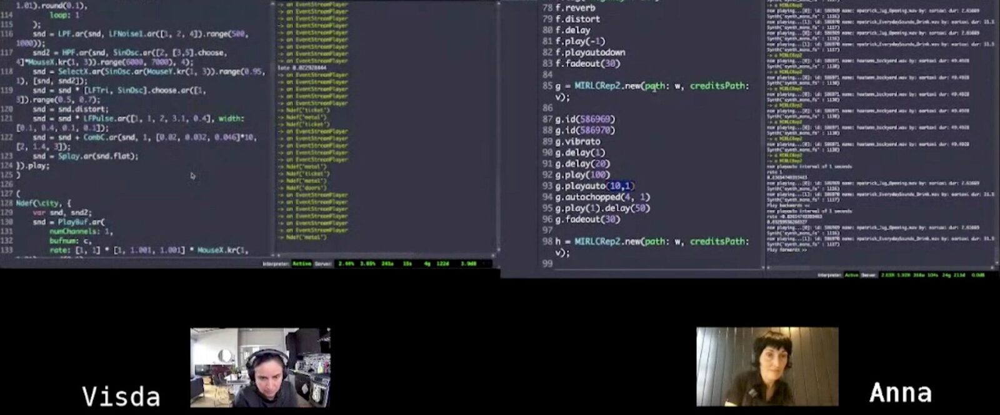
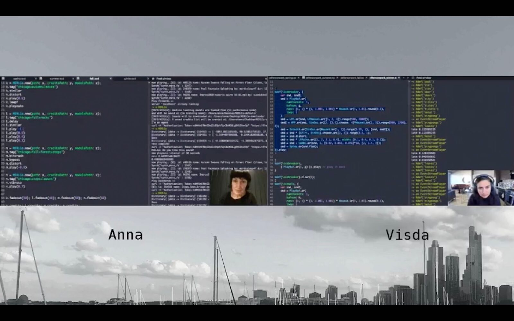
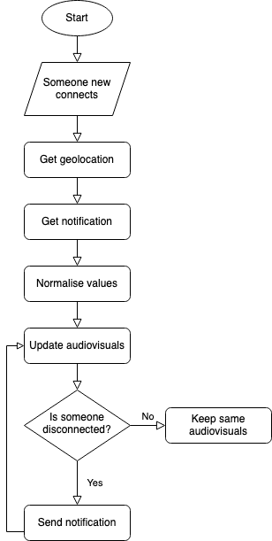
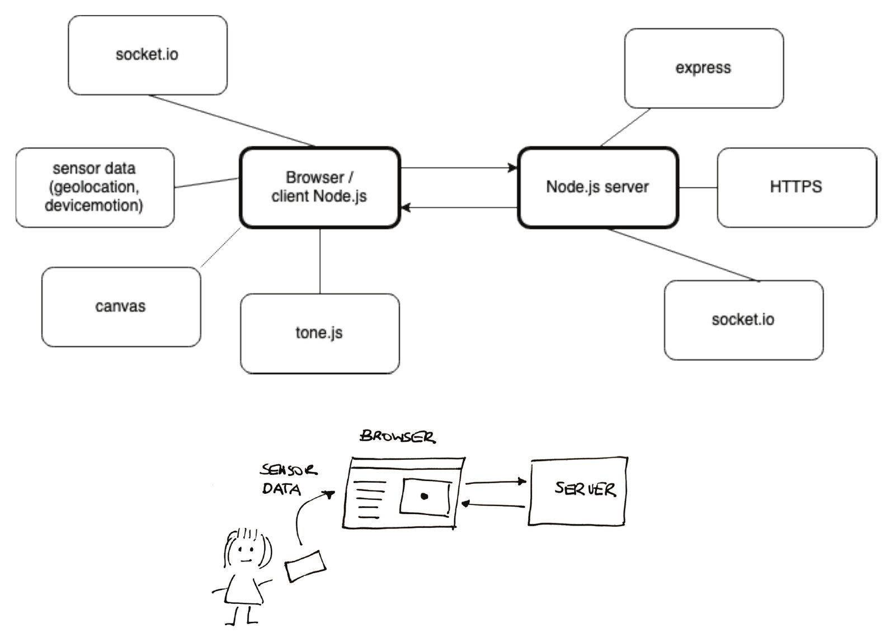
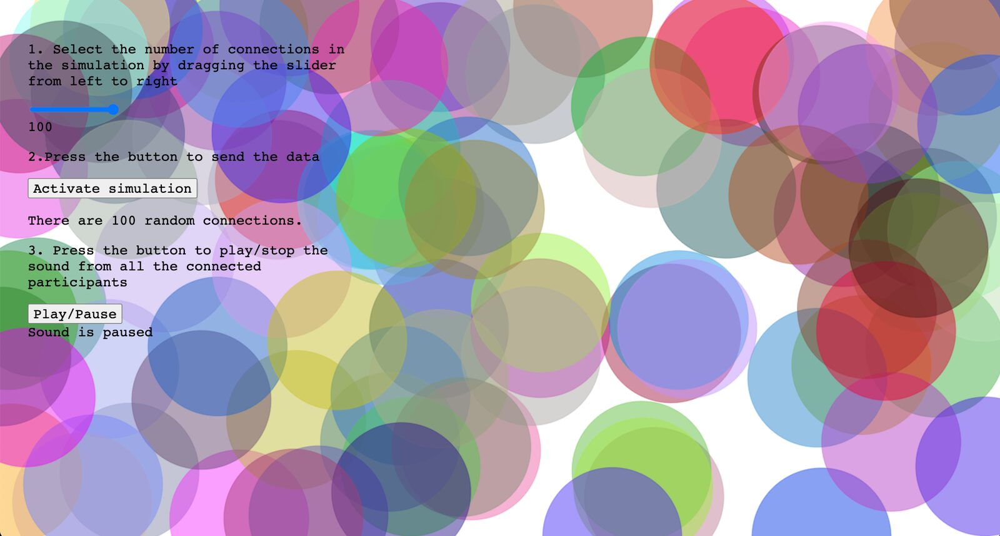
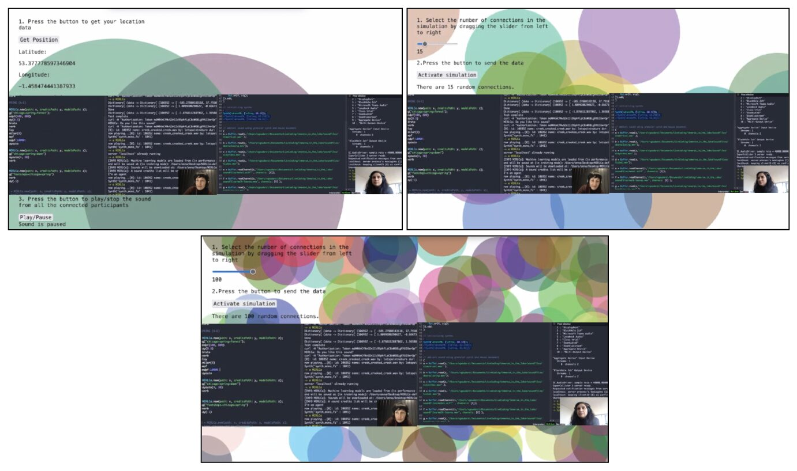

The Mobile Audience as a Digital Musical Persona in Telematic Performance
Abstract
One of the consequences of the pandemic has been the potential to embrace hybrid support for different human group activities, including music performance, resulting in accommodating a wider range of situations. We believe that we are barely at the tip of the iceberg and that we can explore further the possibilities of the medium by promoting a more active role of the audience during telematic performance. In this paper, we present personic, a mobile web app designed for distributed audiences to constitute a digital musical instrument. This has the twofold purpose of letting the audience contribute to the performance with a non-intrusive and easy-to-use approach, as well as providing audiovisual feedback that is helpful for both the performers and the audience alike. The challenges and possibilities of this approach are discussed from pilot testing the app using a practice-based approach. We conclude by pointing to new directions of telematic performance, which is a promising direction for network music and digital performance.
Author Keywords
Audience participation, collaborative music-making, mobile music, network music, practice-based research, web audio
CCS Concepts
•Applied computing → Sound and music computing; Performing arts; •Human-centered computing → Collaborative and social computing;
Introduction
During the COVID-19 pandemic, we have experienced an unprecedented global lockdown for several months. Cultural and creative industries have reinvented themselves exploring new ways of communication using remote digital collaboration, e.g. museums [1] and cinemas [2]. The tools for telematic performance have become more popular to keep musicians connected from their homes [3][4][5][6][7]. After the 2020–2021 period of on-off lockdowns at local, national and global levels, we are experiencing the new hybrid world, where either on-site or online performances, as well as hybrid performances with both on-site and online presence, can take place. Although unfortunately, the pandemic has increased existing inequalities across the world, in an ideal scenario with no digital divide, this hybrid approach tends to be more inclusive because it allows more ways to participate. However, although technically possible, it is also technologically more challenging because it requires supporting more scenarios.
Since the mainstream dawn of graphical user interfaces (GUIs) in the early 1980s [8], a common approach when designing digital interfaces has been to borrow metaphors from the physical world’s everyday life, known as skeuomorphism. For example, a file directory system reminds the office stationery paper folders and a graphical palette resembles the painter’s colour palette or the artist’s workshop toolset. In the digital domain, we tend to use real-world metaphors. However, the intrinsics of the digital world are different. Hence, we could also explore other metaphors related to its interactive nature, which refers here to the capacity for two-way communication with the audience. An example is an online chat, which brings a new toolset for communication (e.g. emoticons, text messaging) [9][10], nonetheless inspired on a human-human conversation. We are still in the infancy of system designs that can support novel social interactions for living online [11]. Our belief is that we need to explore new tools brought by the inherent interactive nature of the digital domain.
In this paper, we aim at exploring how to promote more participation of the audience during a telematic performance from a musical perspective informed by our practice. Our impression is that we should explore new creative ways of engaging with the audience in telematic performance instead of focusing on porting the same experience of an on-site performance. This paper is driven by the following research question: What can our practice tell us about the challenges and benefits of integrating the audience in telematic performance through a non-intrusive approach that promotes their presence and engagement as a digital musical persona using their mobile devices?
Here we present a basic mobile web app that has been designed for online audiences in telematic rehearsals and performances. The development of the web app is informed by the telematic performance practice of the two authors. The mobile app’s data collected comes from the geolocation and motion sensors of the audience’s mobile devices. The data are used to generate drone ambient music and to provide an abstract visual representation of the audience members. This aims to promote a sense of community and of being part of the live event. So far, we have tested and reflected upon the app in simulation environments.
Background
Audience Participation with Musical Smartphones
With the development of web standards, it has become technically and socially feasible to create software that promotes audience participation using their smartphones, which has been especially examined in on-site musical performances [12][13]. The combination of existing software (e.g. web audio, web sockets) with hardware (e.g. built-in sensors and actuators) transforms the accessible mobile phone into a musical instrument that can be part of a musical network.
The development of frameworks for participatory mobile music such as soundworks [14] and handwaving [15] have facilitated the creation of suitable musical pieces for this new musical genre. There have been several approaches to participatory mobile pieces, characterised as networked collective interactions [12] and audience-centric mobile music [13], among others. This approach connects with participatory art practices of audience engagement and interaction [16], in which three levels of audience engagement are identified: crowdsourcing, performance agency and co-authorship.
Although this new approach to collaborative music-making makes it easier to connect with the audience via their smartphones, there exist some potential challenges. For example, maintaining the audience motivated throughout the musical piece [13], attentive to being part of a collective endeavour [12] as well as protecting the security and privacy of the available sensors on mobile phones due to its potential vulnerability [17].
Distributed Performance during COVID
Network music performance has been researched from several perspectives (e.g. technical [18] and socio-cultural [19]). During COVID-19, we have experienced a popularisation of the use of network music performance tools combined with live streaming tools [3][7]. Many conferences have been designed to be hybrid or online including NIME (e.g. 2020–2022). Music festivals have been cancelled, postponed, or reshaped, such as the Network Music Festival.1
Amidst this climate, the musical practice of live coding has had an important role in distributed performance. One of the most obvious reasons is that live coding can be easily delivered online compared to other musical practices. Apart from the long tradition of network music tools in SuperCollider [20] (e.g. HyperDisCo,2 the Republic Quark,3 Utopia)4 and live coding (JitLib),5 there exist several web-based collaborative music live coding systems, such as EarSketch,6, Estuary,7 Extramuros,8 among others. Usually, these approaches have a centralised server and a unified interface view that integrate consistently the live coders’ actions. By contrast, our approach explores integrating visually two different SuperCollider sets using a peer-to-peer streaming approach.
Rethinking network music pieces from on-site to online delivery can bring challenges and opportunities alike [21]. One of the lessons learned from the global pandemic is that supporting a hybrid world can be more inclusive and flexible. A potential follow-up is to keep exploring how to blend better the online and on-site experiences. Our interest is focused on inviting the audience to also participate in the music-making.
Audience Participation in Distributed Performance during COVID
Here, we highlight two explorations of new ways of audience participation in distributed performance, which mainly emerged during the global lockdown. These explorations typically include rethinking the role of the audience and taking advantage of the networked distribution of participants.
Papadomanoliki [22] combines the intimacy of a soundwalk with audience engagement, which becomes a collective action, referred to as telematic soundwalking. The listening process and thinking through sounds becomes at the forefront of the experience between the remote streamer and the onsite listeners.
Autopia [23] is an artificial intelligence (AI) system based on genetic programming that is designed for collaborative live coding. Audience participation is sought through gamification. The audience can vote through a webpage using their mobile phones in real time by scoring what they are hearing utilising a slider. The audience’s slider values are averaged and used for the next generation of agents.
personic: A DMP System
Two Case Studies from Practice-Based Research
We started this collaboration between the two authors in the summer of 2021, considering that we were based on two different continents but we could still collaborate as two laptop performers of live coding and using available tools for video streaming (OBS.Ninja,9 OBS)10. Each of us worked with their own SuperCollider sets. The first author used a self-built system [24] retrieving site-specific sounds from Freesound [25] and the second author organised the site-specific recordings and used self-built functions. Next, we present two case studies that reflect on two performances and iterations of this collaboration, which were both telematic performances with the audience also attending remotely. In both case studies, apart from the live chat during the live stream and the number of views and likes, the audience was hardly perceived from the performer’s perspective, a question that drives this paper.
Case Study 1: Livesourcing. On 24 September 2021, we performed a 20-minute live coding telematic piece at Ear Taxi Festival, Chicago, IL, USA (see Figure 1). The piece, entitled Livesourcing: Audience Participation in a Live Coding Performance entailed a participatory remote live coding performance for audience members and two laptop performers. The performance was based on processing sound generated by crowdsourced and personal site-specific sounds from Chicago combined with the audience’s influence in real time in a free interpretation of John Cage’s A Dip in the Lake [26]. We live-streamed the event on YouTube via OBS. A video of a rehearsal can be watched at https://youtu.be/FQXAOBvSZBk.


Screenshot of a rehearsal of Livesourcing with performers Visda Goudarzi (left) and Anna Xambó (right).
Case Study 2: immerse in the lake. As a follow-up of Livesourcing, on 21 November 2021, we performed a 25-minute live coding telematic piece at Jefferson Park EXP, Chicago, IL, USA (see Figure 2). The piece, entitled immerse in the lake involved a remote live coding performance for two distributed laptop performers. The performance was based on processing sound generated by crowdsourced and personal site-specific field recordings from Chicago across the four seasons of the year. Similar to the previous piece, this work was also a real-time improvisation and a free interpretation of John Cage’s A Dip in the Lake. We live-streamed the event on Twitch via OBS. The video of the performance can be watched at https://vimeo.com/649113897.


Screenshot of the performance immerse in the lake with performers Anna Xambó (left) and Visda Gourdarzi (right).
The Concept of Digital Musical Persona
This project proposes to approach the audience as a digital musical persona (DMP). Here, a DMP is characterised as a singular identity representing a NIME, built from a collective, that can contribute to a telematic performance. A DMP that forms a reticular entity configured by anonymous audience members. This novel approach has a mutual benefit. It benefits the performers who have an integrated view of the audience, as well as the audience who can participate artistically during the performance. The reasoning behind this approach is drawn from our previous experience with participatory mobile music [13][27].
System Workflow
In personic, user data is collected from the geolocation and motion sensors of the participants’ mobile devices. The data are used to generate music and to provide an abstract visual representation of the participatory audience. This aims to promote a sense of community and of being part of the live event. The code has been publicly released.11
The audience can get access from their mobile devices to a hyperlink provided. The web app asks for explicit user permission to access the sensors of geolocation and motion. This assures anonymous participation with the individual’s knowledge and consent about sharing the sensor data. After the user consent, their geolocation is displayed as a bubble with a random colour in an abstract 2D map and it contributes musically to the generation of a drone soundscape. The more connections, the more bubbles on the map, which are resized to keep a consistent density. The motion data can modify subtle changes to the size and glow of the bubble assigned to a specific connection. The audiovisual map, which is displayed in the browser window of the web app, can be included in the live stream of the performance together with the shared screens of the two performers with the intention to bring more visibility of the mobile audience becoming a DMP.
The system is divided into two sensor modules, the geolocation module and the motion module. The geolocation module is the principal module and has the following sequential flowchart (Figure 3).


Flowchart of the geolocation module.
System Implementation
To keep it a simple cross-platform accessible system, we have developed a basic prototype using web standards. Figure 4 shows the system diagram and the web technologies used.


System diagram and workflow.
The prototype focuses on two sensor APIs: geolocation12 and device motion.13 The audio engine of this basic prototype fits well with sound-based music, drone ambient music and electroacoustic music using Tone.js [28], a web audio framework for interactive music. For each new connection or individual participant, the longitude and latitude are mapped to the frequency and phase of a new sine wave oscillator. The possible frequencies of the sine wave oscillators range from 20 Hz to 150 Hz while the phase, which refers to the starting position within the oscillator’s cycle, can range from 0 to 360 degrees. This mapping relates to creating a drone, atmospheric sound that can fit well with the performers’ music. At present, the drones get combined using additive synthesis. The participants can only experience the entire performance from the video streaming platform, which can be combined with the direct experience from the web app which has only the participants’ atmospheric sounds. The accelerometer data only map to the visuals, but we plan to add more variation when the audience members are located in the same or a close location.
For user testing purposes, we have implemented a simulation mode where we can test up to 100 agents to replicate a scenario of 100 audience members across the globe (see Figure 5).


System’s interface in simulation mode.
Practice-Based Pilot Testing
We did approach the pilot testing of the web app as practice-based pilot testing. We adopted the design method of user experience GUI prototyping with enough fidelity to envision how the web app can work in our performances. At this stage, we focused on pilot testing the visuals. We included the browser view of the web app as one of the three video feeds in OBS, the other two being the video feeds from the two performers. We explored the use of the browser view utilised as the background in the principal scene layout.
We tested the prototype during one of our rehearsals mainly using the simulation mode. As shown in Figure 6, we tried three modalities: (1) using the real locations of the two performers; (2) using a simulation of 15 audience members randomly located (a common number in this type of concert); and (3) using a simulation of 100 audience members randomly located. The bubble size changed depending on the density of the connections so that the bubbles had a noticeable presence on the map.


Pilot testing of personic. Top-left: reality mode with two real locations from the performers. Top-right: simulation mode with 15 random locations. Bottom: simulation mode with 100 random locations.
This prototyping session helped us to speculate how we foresee the use of the web app as part of our future rehearsals and performances. We discussed that the web app is fun to play, including for the performers. We also mentioned our interest in exploring it in an on-site context. For example, we could give instructions to the audience members to move within the space, which could control the audio engine. We acknowledged that designing a tool for hybrid scenarios has potential and that the audience could affect differently depending on whether they are distributed or co-located.
For the audio, we missed a volume slider, especially when there is a high density of bubbles. This feature would improve the current audio control buttons of play and stop. We commented that investigating the mapping of physical distance to sound effects could be interesting.
The prototype used in this session did not have the motion data implemented yet. We agreed that making the bubbles glow can give some liveliness, which could be slightly modified with the accelerometer. Overall, we found that sharing the browser of the web app has potential for live visuals.
Discussion
From this work, we can say that personic is a promising approach to incorporate ideas based on the notion of a collective digital persona [29][30][31] in the network society [32] applied to music performance, which can then characterise the new concept of a digital musical persona or DMP. Our early investigations point to potentially benefiting the overall telematic performance experience by giving an audiovisual voice to the audience. However, dealing with different densities and scenarios from distributed to co-located to both will need to be formally tested to examine the most suitable mappings between the sensor data and the audiovisual output.
Future work includes technical, conceptual and assessment elements. Once it is adopted by more browsers, future implementation versions will look into sensor polyfills14 so the code is more standards-compliant. Exploring how AI algorithms can enhance the social dimension is also of interest, which especially links to the simulation mode. Developing a cluster mode for on-site settings is a priority for supporting hybrid experiences. This can be connected with mobile crowdsensing, which investigates the possibilities of employing the users’ smartphones for large scale sensing [33]. Blending two experiences, distributed and co-located, entails conceptualising how to make a musical and visual distinction between both types of connections and what the hybrid setting would look like. We also plan to run a series of pilot studies with human participants during our forthcoming rehearsals and performances to assess the prototype’s design decisions as well as to develop more complex audiovisual mappings.
Conclusions
This paper presented a new approach to telematic digital performance in the form of a web app designed for distributed audiences who can participate non-intrusively in the constitution of a digital musical instrument, termed here as a digital musical persona. The motivation has been to reflect on our practice and the lessons learned from the global pandemic as well as to improve our previous experiences of promoting audience participation with musical smartphones related to creating a digital collective footprint. The wide range of available technologies positions this research in a fertile moment in which we can imagine beyond real-world metaphors, explore other possibilities brought by digital materiality, and conceptualise novel hybrid ecosystems.
Acknowledgments
We would like to thank the following participants for sharing their field recordings from Chicago: Henry Edwards, Patrick Martin, Autumn Hill, Cade Gau and Riccardo Seaman. We are thankful to Gerard Roma for technical advice and Frederic Font for technical support with Freesound. We acknowledge the help and support by Keith Helt from Chicago’s netlabel pan y rosas for hosting the concert at Jefferson Park EXP and Jessica Wolfe, Jennie Brown and Michael Lewanski for their help at the Ear Taxi Festival.
Ethics Statement
Our institutions are aware of this research, which has been ethically approved by De Montfort University (DMU)’s Research Ethics Committee (CEM ID C451429) following DMU's Research Ethics Code of Practice. This study is practice-based research that is low-risk and did not involve human participants at this stage.
Footnotes
- ↩
- ↩
- ↩
- ↩
- ↩
- ↩
- ↩
- ↩
- ↩
- ↩
- ↩
https://developer.mozilla.org/en-US/docs/Web/API/Navigator/geolocation
↩https://developer.mozilla.org/en-US/docs/Web/API/Window/devicemotion_event
↩- ↩
Citations
- ↩Noble, K. (2021). Challenges and Opportunities: Creative Approaches to Museum and Gallery Learning during the Pandemic. International Journal of Art & Design Education, 40(4), 676–689.
- ↩Zioga, P., & Vélez-Serna, M. A. (2021). Interaction Design for Audiences: A Proposition for Building Resilience and Recovery for COVID-Safe Independent Cinemas. Proceedings of the Audiences Beyond the Multiplex: Understanding the Value of a Diverse Film Culture Conference.
- ↩Alarcón, X. (2020). Telematic Sonic Performance Part 1: A Short Introduction. Available online: https://thesampler.org/guest-editor/telematic-sonic-performance-part-1/ (accessed on January 8, 2022).
- ↩Nguyen, T. T., Frisk, H., Hebert, D., & ÖStersjö, S. (2021). Studio Saigon: Telematic Performance and Recording Technologies in Light of the Covid-19 Pandemic. The Urban Research Plaza’s 18th Urban Culture Forum.
- ↩Pilchen, D., & Wilson, R. (2021). Introducing the Networked Music Performance Library. Organised Sound, 26(3), 340–353.
- ↩Rossetti, D., & Bomfim, C. C. (2021). Live Electronics, Audiovisual Compositions, and Telematic Performance: Collaborations During the Pandemic. Journal of Network Music and Arts, 3(1), 3.
- ↩Xambó, A. (2020). Network Music Performance During COVID-19 and Beyond: A Quick Review of Available Software. Available online: http://annaxambo.me/blog/research/2020/06/02/network-music-performance/ (accessed on January 8, 2022).
- ↩Reimer, J. (2005). A History of the GUI. Available online: https://arstechnica.com/features/2005/05/gui/ (accessed on January 8, 2022).
- ↩Ruan, L. (2011). Meaningful Signs—Emoticons. Theory and Practice in Language Studies, 1(1), 91–94.
- ↩Varnhagen, C. K., McFall, G. P., Pugh, N., Routledge, L., Sumida-MacDonald, H., & Kwong, T. E. (2010). Lol: New Language and Spelling in Instant Messaging. Reading and Writing, 23(6), 719–733.
- ↩Donath, J. (2014). The Social Machine: Designs for Living Online. MIT Press.
- ↩Bevilacqua, F., Matuszewski, B., Paine, G., & Schnell, N. (2021). On Designing, Composing and Performing Networked Collective Interactions. Organised Sound, 26(3), 333–339.
- ↩Xambó, A., & Roma, G. (2020). Performing Audiences: Composition Strategies for Network Music using Mobile Phones. Proceedings of the International Conference on New Interfaces for Musical Expression, 55–60.
- ↩Matuszewski, B. (2020). A Web-Based Framework for Distributed Music System Research and Creation. Journal of the Audio Engineering Society, 68(10), 717–726.
- ↩Roma, G., Xambó, A., & Freeman, J. (2017). Handwaving: Gesture Recognition for Participatory Mobile Music. Proceedings of the 12th International Audio Mostly Conference on Augmented and Participatory Sound and Music Experiences.
- ↩Bevilacqua, F., Matuszewski, B., Paine, G., & Schnell, N. (2021). On Designing, Composing and Performing Networked Collective Interactions. Organised Sound, 26(3), 333–339.
- ↩Xambó, A., & Roma, G. (2020). Performing Audiences: Composition Strategies for Network Music using Mobile Phones. Proceedings of the International Conference on New Interfaces for Musical Expression, 55–60.
- ↩Goudarzi, V., & Gioti, A.-M. (2016). Engagement and Interaction in Participatory Sound Art. Proceedings of Sound and Music Computing.
- ↩Xambó, A., & Roma, G. (2020). Performing Audiences: Composition Strategies for Network Music using Mobile Phones. Proceedings of the International Conference on New Interfaces for Musical Expression, 55–60.
- ↩Bevilacqua, F., Matuszewski, B., Paine, G., & Schnell, N. (2021). On Designing, Composing and Performing Networked Collective Interactions. Organised Sound, 26(3), 333–339.
- ↩Das, A., Acar, G., Borisov, N., & Pradeep, A. (2018). The Web’s Sixth Sense: A Study of Scripts Accessing Smartphone Sensors. Proceedings of the 2018 ACM SIGSAC Conference on Computer and Communications Security, 1515–1532.
- ↩Gabrielli, L., & Squartini, S. (2016). Wireless Networked Music Performance. Springer.
- ↩Mills, R. (2019). Tele-Improvisation: Intercultural Interaction in the Online Global Music Jam Session. Springer.
- ↩Alarcón, X. (2020). Telematic Sonic Performance Part 1: A Short Introduction. Available online: https://thesampler.org/guest-editor/telematic-sonic-performance-part-1/ (accessed on January 8, 2022).
- ↩Xambó, A. (2020). Network Music Performance During COVID-19 and Beyond: A Quick Review of Available Software. Available online: http://annaxambo.me/blog/research/2020/06/02/network-music-performance/ (accessed on January 8, 2022).
- ↩McCartney, J. (2002). Rethinking the Computer Music Language: Supercollider. Computer Music Journal, 26(4), 61–68.
- ↩Wilson, S., Vasilakos, K., & Sevilgen, S. (2021). Live Coding in the Time of COVID. Proceedings of the International Conference on Live Coding.
- ↩Papadomanolaki, M. (2021). Telematic Sound Body: A Trajectory of Intimacy and Defiance. Organised Sound, 26(3), 317–326.
- ↩Lorway, N., Powley, E., & Wilson, A. (2021). Autopia: An AI Collaborator for Live Networked Computer Music Performance. Proceedings of the 2nd Conference on AI Music Creativity.
- ↩Xambó, A., Roma, G., Roig, S., & Solaz, E. (2021). Live Coding with the Cloud and a Virtual Agent. Proceedings of the International Conference on New Interfaces for Musical Expression.
- ↩Font, F., Roma, G., & Serra, X. (2013). Freesound Technical Demo. Proceedings of the 21st ACM International Conference on Multimedia, 411–412.
- ↩Cage, J. (1978). A Dip in the Lake: 10 Quicksteps, 61 Waltzes, and 56 Marches for Chicago and Vicinity: for Performer (s) Or Listener (s) Or Record Maker (s). Henmar.
- ↩Xambó, A., & Roma, G. (2020). Performing Audiences: Composition Strategies for Network Music using Mobile Phones. Proceedings of the International Conference on New Interfaces for Musical Expression, 55–60.
- ↩Xambó, A., & Roma, G. (2017, August). Hyperconnected Action Painting. Proceedings of the International Web Audio Conference.
- ↩Mann, Y. (2015). Interactive Music with Tone.js. In S. Goldszmidt, N. Schnell, V. Saiz, & B. Matuszewski (Eds.), Proceedings of the International Web Audio Conference. IRCAM.
- ↩Clarke, R. (1994). The Digital Persona and Its Application to Data Surveillance. The Information Society, 10(2), 77–92.
- ↩Lévy, P. (1997). Education and Training: New Technologies and Collective Intelligence. Prospects, 27(2), 248–263.
- ↩Kerckhove, de D., & Almeida, de C. M. (2013). What Is a Digital Persona? Technoetic Arts, 11(3), 277–287.
- ↩Castells, M. (2000). The Rise of the Network Society (2nd ed., Vol. 1). Blackwell Publishers.
- ↩Yu, Z., Ma, H., Guo, B., & Yang, Z. (2021). Crowdsensing 2.0. Communications of the ACM, 64(11), 76–80.